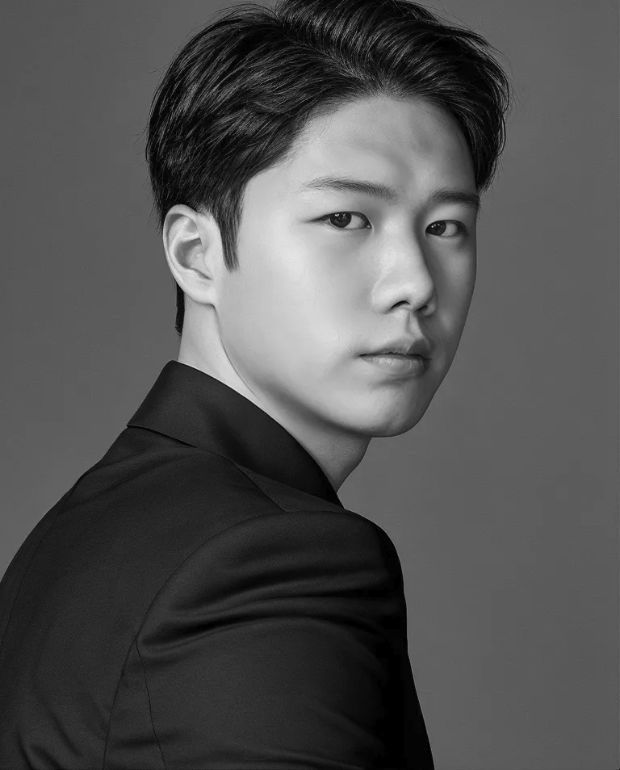
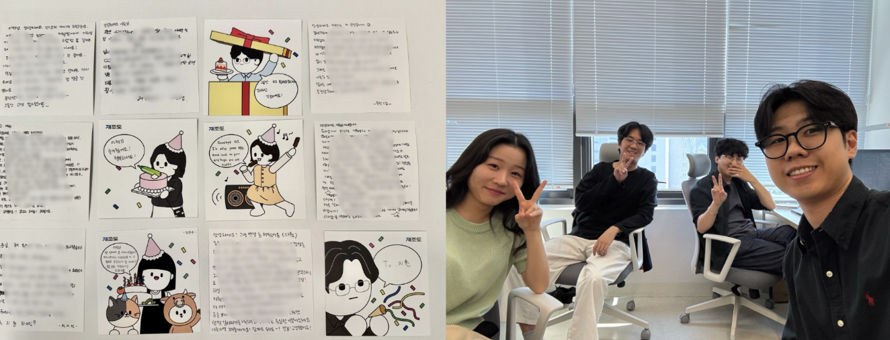
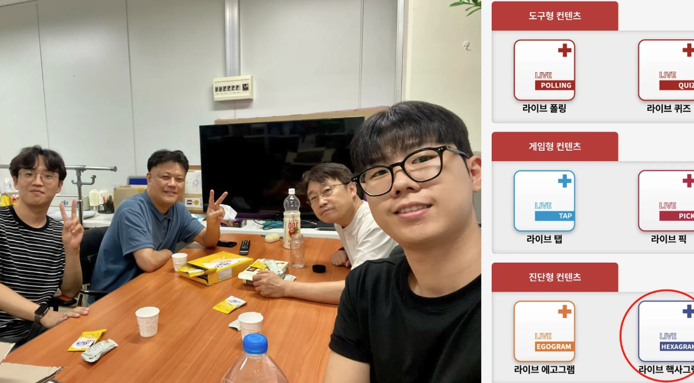
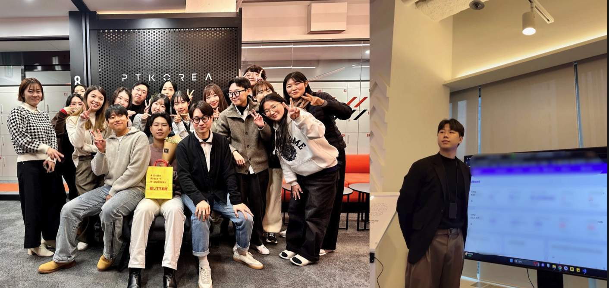
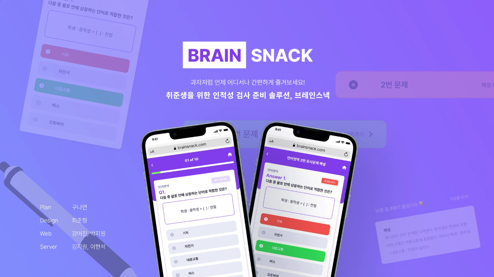
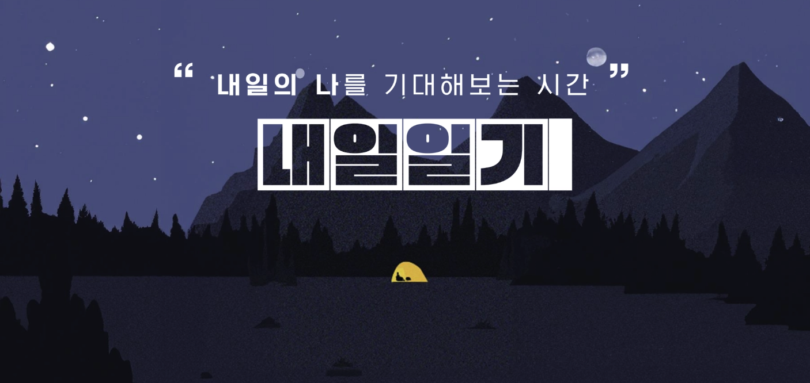

I'm a developer based in New Jersey, working mostly in Next.js and TypeScript. Teams I've worked with would probably say my real strength is communication. I listen well, I explain clearly, and I care about the person on the other side of the screen.

Two internships and two full-time roles. Each one taught me something different about building software with other people.
H Mart is a Korean-American grocery chain with 88 stores and over 1,170 employees. I'm on the IT team, which means a lot of listening to problems and figuring out how to solve them for good.
Equipment records lived in scattered spreadsheets, so I proposed and built a platform that tracks location, repair history, and costs in one place, with a cost report dashboard for managers. I designed it so assets register as repairs happen, which meant no painful data migration for anyone. After an executive review it moved into a company-wide pilot with our 19-person IT team.
Our in-store food court queue systems broke every time Chrome updated. I wrote a Python script that detects the update and installs the matching ChromeDriver automatically, replacing a manual fix that used to happen store by store.

A small startup where everyone did a bit of everything. I shipped two public-facing projects here and learned what it means to support real users in real time.
A coupon platform for a local commerce campaign run by Dongjak District, used by 9,300 residents. With that many users I didn't want to guess, so I used Storybook to check UI states and wrote Jest tests to make sure functions did what we intended. During maintenance I brought in react-virtualized to keep long lists smooth on slower phones. And because it was a startup, I also answered user calls during the live event, shared what I heard with the team, and we shipped fixes right away.
A popup event where visitors take a short taste test and get matched with neighborhood shops. I was the only frontend developer, building both the test experience and the admin results page. Working daily with the backend and design teams taught me how much smoother a project runs when questions get asked early.

An edtech startup building live interactive content for classrooms. My internship project became a paid product that is still in service today, which I'm still a little proud of.
A personality assessment that sorts people into six types, sold as part of the WithPlus Live platform. I handled the design in Figma and built the frontend. Students download their results as a PDF, and teachers watch results come in on a real-time dashboard. It served about 500 students and 30 teachers across two schools, with around 100 people connected at once.
An educational game where students compete in real time, made to warm up a class before a lesson. I built the frontend prototype during my internship, and the finished version is now in service.

My first time working on software at a global scale, and my first time being the person who bridges two languages in a meeting room.
Operated and developed Samsung's global homepages across 80+ countries on Adobe Experience Manager, adapting each version to client requirements. My primary market was Samsung Japan. I also represented the team in global meetings held in English and translated the outcomes for my Korean colleagues.
Joined the planning and prototyping of an all-in-one collaboration platform, with ticket tracking, project contract management, and a BI dashboard for team performance. I worked on the prototype frontend.
Before all of this, I served as a sergeant in the Republic of Korea Army artillery branch, 2020 to 2022.
I'm early in my career and still learning every week. These are the tools I've used enough to be useful with, and honest about.
The tool I'm most at home with. I try to keep components small and reusable, and pull business logic into custom hooks so the UI stays clean. I've used Recoil and Jotai for global state, and I've learned the hard way that predictable data flow matters more than clever code.
Two projects I keep coming back to when people ask what I've made. Tap one for the full story.

Aptitude test prep for job seekers. Practice by category, get your answers scored with explanations, and retry similar questions generated by ChatGPT.
The team: planners, a designer, two web developers, and two server developers, most of us meeting for the first time. I was one of the two on web.
The problem we hit: the backend fell behind, and the deadline didn't care. Rather than wait, we agreed on the API interface early and I built against a mock with JSON Server. When the real API landed, we swapped it in and shipped on time.
What I took away: conventions are kindness. ESLint, Prettier, and shared component patterns let strangers move fast without stepping on each other.
Built with React, TypeScript, TailwindCSS, and React Query.

A diary you write for tomorrow instead of today. Choose the feelings you expect, write ahead, and check back to see how it went.
Wearing two hats: we had no designer, so I opened Figma and made the design system myself. Defining the grid and colors before coding turned out to save time, not cost it.
Only frontend dev on the team: I got to choose the stack, tried Recoil for global state for the first time, and deployed to Vercel. To make sure I really understood Recoil, I recorded a YouTube video explaining state management to others.
The unglamorous part: this was a software engineering course project, so we wrote everything down. Requirements, UML models, UI specs, test plans and reports. I learned that a surprising amount of building software is writing documents, and I stopped resenting that.
Built with React, JavaScript, Recoil, and CSS.
The parts that don't fit on a resume.
Palisades Park, just across the river from Manhattan. I'm a U.S. Permanent Resident, bilingual in English and Korean, and comfortable being the bridge between the two.
I've always liked writing, from running a food blog to documenting things at work. When a team is missing an internal manual, I use AI to turn scattered know-how into clear docs fast, so information stops living in one person's head.
I taught English to 14 students over six years, mostly for college entrance exams, and volunteered as a tutor for underprivileged students. Teaching is proof of something I value: if I know it, I can pass it on in a way that actually lands.
I double majored in Software Engineering and English Literature at Ajou University. The engineering side gives me structure and logic, and the humanities side helps me understand people and put ideas into words.